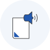
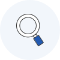
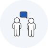
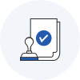
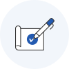
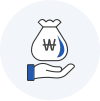

레저장비산업개발지원 소개 및 신청


자전거 · 해양레저장비 관련 국산화 기술개발을 추진하고자 하는 기업은 신청하여 주시기 바랍니다.

 사업계획서에 과제번호를 기입하지 않고 업로드하여주시기 바랍니다. 업로드 가능시간은 2022년 4월 14일 18시 00분까지 입니다.
사업계획서에 과제번호를 기입하지 않고 업로드하여주시기 바랍니다. 업로드 가능시간은 2022년 4월 14일 18시 00분까지 입니다.
레저장비기술개발 사업 세부 계획
사업개요
사업목적
- 고부가가치 자전거 ·해양레저장비 분야의 기술개발 지원을 통한 중소기업 기술 경쟁력 확보 및 관련 산업 육성
지원대상
- 자전거·해양레저장비 및 관련 소재·부품 · 장비를 제조하거나 관련 서비스를 제공하는 중소기업
사업예산
- 14.1억원
신청자격
주관연구개발기관
-
중소기업기본법 제2조에 의한 지원대상 중소기업
* 중소기업의 범위 : 중소벤처기업부(http://www.mss.go.kr) 알림소식 → 법령정보 → 중소기업범위기준 (중소기업기본법 제2조 및 같은 법 시행령 제3조)
공동연구개발기관
- 주관연구개발기관과 공동으로 사업을 수행하는 기관으로서 기업, 대학, 연구기관 등이 공동연구개발기관으로 참여 가능
지원범위 및 지원내용
‘22년 연구개발비 예산 : 14.1억원(계속 3.7억, 신규 10.4억)
지원범위
-
자전거·해양레저장비 산업 관련 기술개발 및 품질 경쟁력 확보를 위한 과제를 대상으로 기술개발에 소요되는 비용 지원
- 자전거부문 : 자전거 및 관련 소재·부품·장비 등
- 해양레저장비 부문 : 해양레저장비 및 관련 소재·부품·장비 등* 자전거의 범위는 자전거, 전기자전거 및 퍼스널 모빌리티(전동스케이트보드, 전동이륜평행차(세그웨이), 전동외륜·이륜보드(전동휠), 전동 킥보드)
* 해양레저장비의 범위는 수상레저안전법 시행령 제2조(정의) 참조
지원내용
- 지원기간 및 한도
- 자전거 부문
-
- 지원기간 : 2년 이내
- 지원한동 : 연 2억원 이내(과제당 총 3억원 이내)
- 해양레저장비 부문
-
- 지원기간 : 2년 이내
- 지원한동 : 연 2억원 이내(과제당 총 3억원 이내)
-
지원비율 (일괄협약 후 연차별 지급)
- 연구개발비의 75% 이하
* “코로나-19 대응을 위한 산업기술혁신사업 특별지침”(산업부 고시 제2022-3호)에 따라 ‘22년은 정부지원비율을 한시적으로 확대(75%→80%) -
공모유형
- 개발하고자 하는 자전거‧해양레저장비 관련 기술을 자유롭게 도출하여 신청
-
정액기술료 징수
- 기술개발 결과에 대한 최종평가 결과 ‘불성실수행’이 아닌 경우 기술료 징수
- 정액기술료
-
- 자전거 및 관련 소재·부품·장비 등
- 징수기간
-
- 5년 이내
민간부담금(정부 이외의 자가 부담하는 비용)
-
정부 이외의 자는 연구개발비 중 정부보조금 이외의 비용을 부담하여야 하며, 연차별 민간부담금 중 현금부담은 민간부담금 총액의 40% 이상으로 함
* “코로나-19 대응을 위한 산업기술혁신사업 특별지침”(산업부 고시 제2022-3호)에 따라 ‘22년은 현금부담을 한시적으로 완화(40%→10%)
중소기업 신규채용 인력 인건비 현금 지원
- 중소기업이 해당 과제 수행을 위해 신규로 채용하는 연구원의 참여율에 따른 인건비는 현금 산정 가능
창업초기 중소기업 기존인력 인건비 현금 지원
- 사업개시일로부터 협약기간 시작일까지 7년이 지나지 아니한 중소기업의 경우 기존 연구원의 참여율에 따른 인건비는 현금 산정 가능
보안과제 운용 관련 사항
- 수행성과가 대외로 유출될 경우 기술적, 재산적 가치의 손실이 예상되어 일정 수준의 보안조치가 필요한 과제의 경우 「산업기술혁신사업 보안관리요령」에 따라 분류하여 관리하여야 함.
신청자는 신청 과제의 보안등급(일반/보안)을 분류하여 이를 사업계획서에 표기하여야 함 -
보안과제는 아래의 어느 하나에 해당하는 과제임
- 세계 초일류 기술제품 개발과 관련되는 과제
- 국방ㆍ안보관련 기술로 전용 가능한 과제
- 「산업기술의 유출 방지 및 보호에 관한 법률」제9조에 의해 지정된 국가핵심기술과 관련된 과제
- 외국의 기술이전 거부로 국산화가 추진 중 이거나, 미래의 기술적·경제적 가치 및 성장잠재력이 높은 기술로서 보호할 필요성이 인정되는 과제
- 지식재산권 확보와 관련하여 기술유출 가능성이 있는 과제
추진체계 및 추진절차
추진체계
추진절차

- STEP 01
- 사업공고 산업통상자원부

- STEP 02
- 신청 ∙ 접수주관연구개발기관 →
전문기관

- STEP 03
- 사전검토전문기관

- STEP 04
- 서면평가평가위원회

- STEP 05
- 현장진단(필요시)전문기관 →
연구개발기관

- STEP 06
- 대면평가 평가위원회

- STEP 07
- 평가결과 통보 및 이의신청전문기관

- STEP 08
- 신규과제 확정산업통상자원부

- STEP 09
- 협약체결 및 정부보조금 지원전문기간 →
주관연구개발기관
- STEP 10
- 사업수행주관연구개발기관
* 현장진단은 전문기관 필요시 진행하고 대면평가 시 활용
평가기준 및 지원 우선순위
평가기준
- 평가지표 및 배점 : 기술성(60점), 연구역량(20점), 사업화 및 경제성(20점)
평가항목 및 세부항목
- 기술성(60점)
-
- 목표 및 연구개발의 도전성 및 창의성 : 정부 지원의 필요성/개발목표의 도전성/지재권 창출 가능성/연구내용 및 방법의 창의성
- 연구방법 및 추진전략 관련 계획의 충실성 : 개발내용 및 방법의 적정성/연구개발비 규모 및 계상의 적정성
- 연구역량(20점)
-
- 총괄책임자 등 연구조직 역량 : 총괄책임자의 전문성 및 연구윤리 적절성, 연구시설 장비 등 인프라의 적절성, 연구인프라 활용 계획의 적절성, 지재권 관리부서 인력 등의 적절성
- 사업화 및 경제성(20점)
-
- 사업화 계획 및 의지 : 사업화를 위한 투자계획 적정성/합리성, 시장분석, 표준화, 인증 대응 등 사업화 추진전략의 타당성 - 경제성 : 기술개발을 통한 추가가치 창출 가능성
지원 우선순위
- 신청과제의 평가점수가 70점 이상인 과제는 “지원가능과제”로 하며, 종합평점이 70점 미만인 과제는 “지원제외”로 분류함. 단, 70점 이상인 과제의 경우에도 해당 분야의 예산 범위가 초과한 경우에는 평가점수가 높은 순위에 따라 우선 지원되며 지원대상에서 제외될 수도 있음.
아래의 경우 평가 시 우대함
- 소재·부품·장비 전문기업이 당해 기술과 관련하여 주관연구개발기관으로 신청한 경우 (5점)
- 일자리안정자금 지원을 받은 기업이 주관연구개발기관으로 신청한 경우 (3점)
-
과제에 참여하는 여성연구원이 다음의 요건 중 하나를 충족하는 경우로 총 수행기간 동안 이를 유지하여함 (2점)
- 총괄책임자가 여성인 경우
- 참여연구원 중 여성연구원이 20% 이상인 경우 -
신기술(NET), 신제품(NEP), 신뢰성(R)인증, 우수디자인상품(GD)을 보유한 기업이 당해 기술과 관련하여 주관연구개발기관으로 신청한 경우(2점)
* 가산점 부여기준은 접수 마감일로 정함
* 사업계획서 평가위원회 평가 시 상기 가점기준에 따라 가점을 합산하되, 총 5점을 초과할 수 없음
사업일정
- 2022년 3월 11일 ~ 4월 14일 사업공고
- 2022년 3월 14일 ~ 4월 14일 사업계획서 접수
- 2022년 4월 25일 ~ 5월 19일 신규과제 선정평가
- 2022년 5월 25일 신규평가결과 통보 및 확정
- 2022년 5월 30일 ~ 6월 10일 협약체결 및 보조금 지급
- 2022년 6월 13일 사업 착수
* 사업일정은 신청규모, 진행 여건 등에 따라 다소 변경될 수 있음
신청요령
신청방법
-
중소벤처기업진흥공단 홈페이지(kosmes.or.kr, 지원사업 > 기타 > 레저장비산업개발지원 > 레저장비기술개발)를 통해서 온라인 접수
* 우편접수, 방문접수 등 오프라인 서류제출 불가

- 1단계
- 회원가입

- 2단계
- 온라인 직접입력 및 양식 다운로드
- 3단계
- 문서작성 및 파일 업로드
중진공

- 4단계
- 접수 확인 및 완료
* 접수 시에는 주관연구개발기관의 총괄책임자가 로그인하여 입력·제출이 원칙(중진공 홈페이지 회원가입 필요)
* 온라인 직접입력 시 과제번호 확인 후, 사업계획서에 과제번호 기입
* 사업계획서 등 제출서류는 직인 날인 후 pdf 스캔본 업로드
* 제출된 서류 등이 허위, 위·변조, 그 밖의 방법으로 부정하게 작성된 경우 관련 규정에 의거, 선정 취소 및 협약해약 등 불이익 조치함
제출서류
- 사업계획서
-
- (첨부1) 사업계획서 (별첨 포함)
* 별첨 : 신청 자격 적정성 확인서(주관연구개발기관, 공동연구개발기관), 우대사항 확인서 (해당시), 연구시설 / 연구장비 구입 및 활용계획서 (해당시), 시약·재료구입 및 활용계획서 (해당시)
- (첨부2) 수행기관 대표의 참여의사 확인서, 수행기관 대표의 개인(신용)정보 동의서
(주관연구개발기관, 공동연구개발기관), 제3자 정보제공 동의서(주관연구개발기관, 공동연구개발기관) 각 1부
- (첨부3) 과제 참여자의 개인정보, 과세정보 이용제공 동의 및 청렴서약서
(주관연구개발기관, 공동연구개발기관) 각 1부
* 파일명 : 주관연구개발기관명_사업계획서.pdf
- 사업계획서
-
- 주관연구개발기관, 공동연구개발기관 사업자등록증명원(국세청 홈택스 발급분) 각 1부
- 주관연구개발기관, 공동연구개발기관 대표자 및 책임자 신분증 사본 각 1부(주민번호 뒤 여섯 자리 삭제 후 제출, ex. 800101-1xxxxxx)
- 주관연구개발기관, 공동연구개발기관 책임자 재직증명서 각 1부
- 주관연구개발기관, 공동연구개발기관 국세, 지방세 완납 증명서 각 1부(비영리기관 제외)
- 주관연구개발기관, 공동연구개발기관 최근 3개년 재무제표증명원(국세청 홈택스 발급분) 각 1부(비영리기관 제외)
- 우대사항 증빙서류 1부 (해당시)* 파일명 : 주관연구개발기관명_제출서류.pdf
관련규정
동 사업을 기획·평가·관리하는데 필요한 세부사항에 대해서는 다음과 같은 운영요령 및 관리지침을 적용함
- 산업기술혁신사업 공통 운영요령, 기술료 징수 및 관리에 관한 통합요령, 산업기술혁신사업 연구개발비 산정, 관리 및 사용, 정산에 관한 요령, 산업기술혁신사업 보안관리 요령, 산업기술혁신사업 연구윤리․진실성 확보 등에 관한 요령, 산업기술개발장비 통합관리요령, 산업기술혁신사업 기술개발 평가관리지침
- 국가연구개발혁신법, 동법 시행령 및 시행규칙, 관련 행정규칙, 국가연구개발 시설장비의 관리 등에 관한 표준지침 등
문의처
- 중소벤처기업진흥공단 ESG진단기술처 진단기술팀 (☎ 055-751-9855, 9858)
동 사업은 경륜ㆍ경정사업 수익금으로 추진되는 사업입니다.